Aula 2
Exames micológicos
O diagnóstico das micoses endêmicas depende da combinação de exames capazes de revelar diferentes aspectos da interação entre o fungo e o hospedeiro. Esses métodos variam em complexidade e sensibilidade, indo desde a observação direta das estruturas fúngicas até técnicas imunológicas que identificam a resposta do organismo à infecção. Cada exame, ao seu modo, amplia a compreensão do quadro clínico e contribui para a construção de um diagnóstico mais seguro e preciso.
Exame micológico direto
O objetivo do exame micológico direto (EMD) é agilizar o diagnóstico com a observação de estrutura característica do agente em uma preparação de hidróxido de potássio (KOH), hidróxido de sódio (NaOH) ou tinta nanquim, bem como para validar o crescimento de um possível agente no cultivo. Em micoses como pitiríase versicolor, cromoblastomicose, doença de Jorge Lobo, coccidioidomicose, paracoccidioidomicose e criptococose, é possível fechar o diagnóstico da micose (mas não o do agente etiológico) no exame direto. Há casos em que o crescimento de alguns agentes só será valorizado mediante sua observação no exame direto. É o caso dos agentes de micoses oportunistas, que podem ser contaminantes da cultura.
Soluções aquosas de KOH ou NaOH em concentrações variando de 10 a 20% são usadas para clarificar o material clínico, pois são capazes de dissolver a queratina sem alterar as estruturas fúngicas, facilitando sua observação. Já a tinta nanquim tem por finalidade promover um contraste, um fundo escuro, que permita a observação da cápsula polissacarídica espessa que envolve os agentes da criptococose (Cryptococcus neoformans e Cryptococcus gattii).
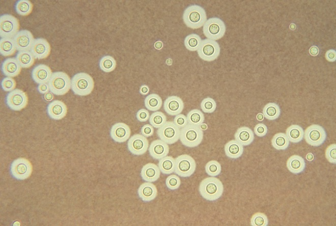
Cryptococcus neoformans
Outras colorações também podem ser utilizadas para melhorar o EMD. Calcofluor, um corante fluorescente que se liga a parede celular fúngica, revela a maioria das estruturas fúngicas e elas aparecem brancas sob cor verde ou verde azulada conforme o filtro usado. A coloração de Gram permite diferenciar fungos filamentosos de actinomicetos, mas não é usada rotineiramente em laboratórios de micologia. Fragmentos de biópsia, aspirado de medula óssea e sangue periférico podem ser corados pelo Giemsa e são utilizados para a pesquisa de leveduras intracelulares, tais como Histoplasma capsulatum.
No exame micológico direto é importante observar o tipo de células fúngicas presentes (levedura, hifa, pseudo-hifa) e se são hialinas ou demáceas (de cor marrom, devido à presença de melanina na parede celular).
- Em leveduras é importante observar seu tamanho e formato, bem como o tipo e o número de brotamentos.
- Em fungos filamentosos é importante observar a espessura da hifa, a presença ou ausência de septos (hifas septadas e cenocíticas, respectivamente), coloração (hialina ou demácia), bem como o ângulo no qual ocorrem as ramificações.
- Em micoses superficiais e cutâneas, o material clínico não necessita de tratamento prévio. As escamas de pele, pelo ou raspas de unha são montadas diretamente entre lâmina e lamínula com uma gota de KOH 10 a 20%.
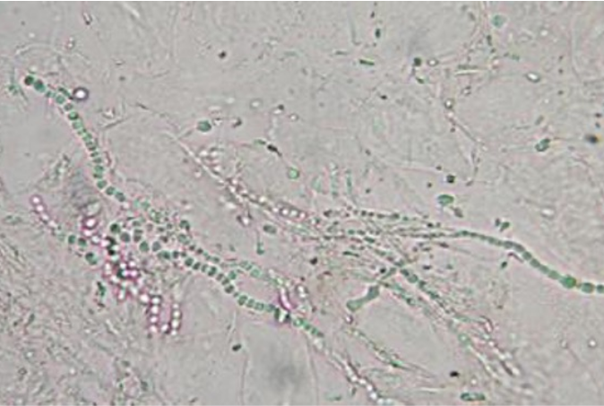
Hifas hialinas septadas formando artroconídios
Entre as micoses subcutâneas, os casos de micetomas precisam de cuidado especial, pois não basta apenas coletar a secreção da lesão. O momento ideal de coleta é quando se abre uma nova fistula. Os grãos devem ser coletados em uma gaze estéril e lavados em salina antes de montar a lâmina com KOH 20%; após identificar a natureza do grão (eumicótico ou actinomicótico) o meio de cultivo é escolhido.
Para esporotricose, em pacientes humanos, geralmente é feito apenas o cultivo, pois a sensibilidade do exame direto é muito baixa devido à escassez de leveduras, que, quando presentes, são hialinas, ovaladas e alongadas (em forma de charuto). Recomenda-se fazer o exame direto no paciente que apresentar a forma fixa da doença (lesão única) para descartar hialo-hifomicose ou feo-hifomicose, principalmente na ausência de história epidemiológica. Em gatos domésticos, as leveduras são observadas mais facilmente devido à riqueza de leveduras em suas lesões.

Você sabia?
A maioria das micoses sistêmicas pode ser diagnosticada no exame direto, exceto a histoplasmose clássica. As leveduras de Histoplasma capsulatum são muito pequenas. Em esfregaços corados, são vistas como leveduras ovaladas medindo entre 2 e 5 µm, parasitando macrófagos ou células gigantes.
A estrutura patognomônica da paracoccidioidomicose (PCM) é a levedura de parede birrefringente, tamanho variado (5 a 40 µm), multigemulada com aspecto de roda de leme. Algumas vezes são observadas apenas leveduras com um ou sem brotamento, mas se as outras características forem encontradas (parede espessa, tamanho variado e sem endósporos no interior), o resultado deverá ser liberado como sugestivo de PCM.
As tabelas a seguir mostram, de forma resumida, o processamento de material clínico (Tabela 1), o aspecto morfológico no exame direto e sua interpretação (Tabela 2).
Processamento de material clínico
| Material clínico | Processamento | Exame micológico direto (EMD) |
|---|---|---|
| Pelos | Não é necessário. | 3 fragmentos em KOH 10 a 20%. |
| Raspado de pele e unha | Não é necessário. | 5 a 7 fragmentos em KOH 10%. |
| Secreção purulenta de lesão | Sem grão: não é necessário. | Baixa sensibilidade (KOH 10%, Gram/Giemsa) |
| Se houver grãos (a), separá-los e lavá-los com salina estéril. | KOH 20%. | |
| Biopsia | Macerar em placa estéril com tesoura de ponta curva estéril. Em caso de suspeita de mucormicose, cortar o fragmento grosseiramente. | KOH 10 a 20%. |
| Escarro/Aspirado brônquico | Recomenda-se o uso de mucolítico para possibilitar a concentração da amostra por centrifugação. Usar o sedimento para EMD e cultivo. | KOH 10%. |
| Urina, Lavado/Escovado brônquico e líquido ascítico | Centrifugar 5 a 10 mL. Usar o sedimento para EMD e cultivo. | KOH 10% e Tinta nanquim. |
| Líquor | Centrifugar 1 a 3 mL. Usar o sedimento para EMD e cultivo. | Tinta nanquim. |
Aspecto morfológico no exame direto e sua interpretação
| Amostra | Aspecto morfológico | Interpretação |
|---|---|---|
| Pelo | Nódulo branco macio em volta do pelo constituído de artroconídios. | Piedra Branca. |
| Nódulo negro, duro, firmemente aderido ao pelo, constituído por trama de hifas com presença de ascocarpo com ascos em seu interior. | Piedra Negra. | |
| Hifas hialinas, septadas, ramificadas desarticulando em artroconídios. | Dermatofitose. | |
| Pele | Hifas ligeiramente curtas, geralmente curvas, raramente ramificadas com elementos esféricos, isolados ou em grupos. | Pitiríase versicolor. |
| Pele/unha | Hifas hialinas e/ou demáceas, septadas, ramificadas com presença ou não de artroconídios. | Dermatomicose (por Scytalidium hyalinum ou Neoscytalidium dimidiatum). |
| Hifas hialinas, septadas, ramificadas. | Sugestivo de Dermatofitose/dermatomicose. | |
| Hifas, pseudo-hifas, leveduras unibrotantes justaseptais. | Candidíase cutânea. | |
| Pus/Biopsia | Hifas hialinas septadas. | Hialo-hifomicose. |
| Elementos arredondados de paredes espessas que brotam unipolarmente e podem ficar unidos por ponte citoplasmática formando cadeias. | Doença de Jorge Lobo. | |
| Hifas demáceas com ou sem a presença de corpos esclercóticos com até um septo. | Feo-hifomicose. | |
| Elemento arredondado demáceo apresentando septos em planos distintos (corpo muriforme). | Cromoblastomicose. | |
| Grãos (Eumicóticos ou Actinomicóticos). | Micetoma. | |
| Biopsia | Hifas cenocíticas. | Zigomicose. |
| Escarro | Levedura com parede espessa, de tamanho variado com múltiplos brotamentos. | Paracoccidioidomicose. |
| Hifas hialinas, septadas, com ramificação em ângulo de 45°. | Sugestivo de Bola fúngica por Aspergillus spp. | |
| Esférulas em vários estágios de maturação. As esférulas maduras possuem endosporos em seu interior. | Coccidioidomicose. | |
| Urina, Lavado bronco alveolar, Líquor | Leveduras capsuladas, globosa ou ovalada. | Criptococose. |
Exame de cultura
O exame de cultura para fungos é indicado para pacientes com suspeita clínica de micoses superficiais, cutâneas, subcutâneas, sistêmicas ou oportunistas. A partir dessa técnica, o diagnóstico é confirmado com a identificação do fungo causador da micose.
Há uma variedade de meios de cultura usados para cultivo primário e recuperação de fungos a partir de amostras clínicas. Não há um meio ou uma combinação de meios adequados para todos os tipos de amostras e fungos, por isso eles são selecionados com base na suspeita do agente e no tipo de amostra clínica recebida.
Os meios podem ser colocados em tubos de vidro com tampa de rosca (medindo 16 mm x 150 mm) ou em placas de Petri estéreis (medindo 15 mm x 90 mm). As placas de Petri têm a superfície de inoculação maior, porém são mais suscetíveis à desidratação e contaminação por serem mais abertas. Os tubos, apesar de terem superfície menor, são mais resistentes à desidratação e contaminação.
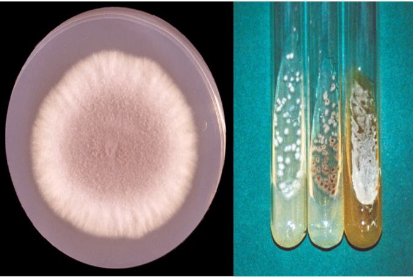
Cultura para fungos em placa de Petri (à esquerda) e em tubos (à direita)
Por último, se a amostra clínica for proveniente de sítio não estéril (como pele, unhas, urina, secreções etc.) é importante incluir substâncias inibidoras ao meio de cultura, como cloranfenicol, que inibe o crescimento de bactérias e ciclo-heximida, que inibe o crescimento de uma série de fungos saprófitas. Os espécimes de sítio estéril podem ser semeados em meios sem inibidores.
Após coleta adequada, as amostras clínicas devem ser processadas cuidadosamente e tão logo cheguem ao laboratório, para que não se tornem inviáveis. Algumas amostras não precisam de nenhum tratamento especial e podem ser cultivadas diretamente; outras precisam ser concentradas, enquanto outras devem ser trituradas.
- Aspirados de abscessos (armazenado em frasco estéril).
- Líquor com volume inferior a 0,5 mL (armazenado em frasco estéril com tampa).
- Exsudatos em geral, lavado broncoalveolar e urina com volume inferior a 2 mL (armazenados em frascos estéreis).
- Pelos, raspado de pele e unhas (armazenados em placas de Petri estéreis e secas).
- Exsudatos em geral, líquor, secreção traqueal, lavado broncoalveolar e urina com volume superior a 2 mL: devem ser concentrados por centrifugação (2000 a 3000 x g por 15 minutos). Para a centrifugação deve-se usar tubos de 10 mL com tampas de borracha estéreis. Depois de centrifugado, desprezar o sobrenadante e usar o sedimento (armazenados em frascos estéreis).
- Escarro: esse material deve ser fluidificado com uma solução de N-acetil L-cisteína 1 % em citrato de sódio 0,1 mol/L. A fluidificação deve ser em partes iguais: 1 parte de escarro para 1 parte de solução fluidificante. Homogeneizar e centrifugar como no item a. Desprezar o sobrenadante e usar o sedimento (armazenado em frasco estéril).
- Tecidos: fragmentar todo o material em uma placa de Petri estéril, com tesoura de ponta curva estéril. Essa técnica é utilizada porque, ao fragmentar o tecido, expõe-se o microrganismo, possibilitando sua visualização (armazenado em frasco estéril contendo solução fisiológica).
- Biópsia óssea: macerar o osso utilizando gral e pistilo (armazenado em frasco estéril contendo solução fisiológica).
- Grãos: após a coleta de grãos em gaze de lesão sugestiva de micetoma ou actinomicose, estes devem ser lavados em salina estéril antes de serem cultivados.
Obs.: espécimes clínicos como biópsia, exsudatos em geral, aspirado de abscesso, escarro, lavado broncoalveolar, líquor e urina devem ser processados até 2 horas após a coleta; pelo, pele, unha, swab em meio de transporte e grão mantêm-se estáveis a temperatura ambiente.
Amostras de unha com esmalte, amostras de escarro que só contenham saliva ou estejam acondicionadas em frascos não estéreis, biópsias que não estejam acondicionadas em solução salina e todo material transportado de forma que não garanta a esterilidade do material clínico deve ser rejeitado, pois, na eventualidade de crescimento de fungos anemófilos, não será possível distinguir se estes são causadores da doença ou contaminantes do ambiente.
• Cultura de amostras biológicas para isolamento de fungos
Após o processamento, a amostra poderá ser usada para isolamento do agente etiológico. Para tanto, deverá ser semeada em movimentos de estrias (zigue-zague) sobre a superfície de meios sólidos de cultura.
• Meios de cultura
O meio de cultura pode ser selecionado segundo tipo de amostra e agente etiológico, conforme a suspeita clínica. De acordo com os aspectos observados ao exame microscópico da amostra, pode-se ainda redirecionar o procedimento para isolamento do agente. Recomenda-se sempre ao menos dois tubos de meio para semeadura da amostra biológica, os quais deverão ser incubados à temperatura de 25 a 30 °C, usada atualmente para todos os tipos de amostras. Quando a hipótese diagnóstica apontar para um fungo dimórfico, ou seja, que apresenta duas morfologias distintas em temperaturas diferentes, incubar um dos tubos a 35 °C. Para isolamento de fungos a partir de qualquer tipo de amostra, devem ser utilizados meios não seletivos, que permitam crescimento de fungos patogênicos de desenvolvimento rápido (menos de 7 dias). Esses fungos, apesar de serem contaminantes do meio ambiente, podem, se termotolerantes, ser agentes de micoses em pacientes suscetíveis, ou seja, são potencialmente oportunistas.
O meio básico em laboratório de micologia é o ágar Sabouraud dextrose 2% (ASD). O ASD é o meio mais utilizado, por ser relativamente barato e permitir o crescimento de todos os fungos, com raríssimas exceções. Usualmente, usa-se um antibiótico para impedir o crescimento de bactérias que poderiam prejudicar o isolamento de fungos. O cloranfenicol é o antibiótico mais indicado, pois resiste à autoclavação. Pode ser colocado tanto no ASD como em outros meios de cultura para fungos. Normalmente, é utilizada uma concentração de 400 mg/L desse antibiótico.
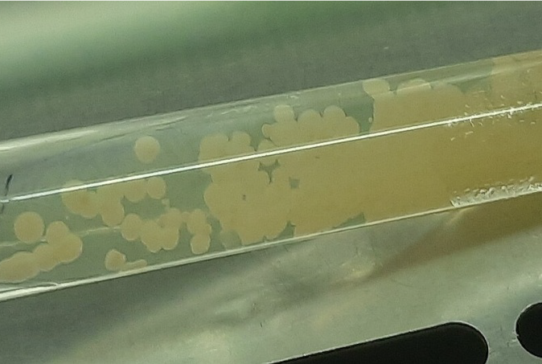
Agar Sabouraud dextrose (SDA)
Meios ditos seletivos para fungos patogênicos contêm ciclo-heximida (Mycosel®), que inibe parcialmente, ou totalmente, fungos anemófilos. Esses meios são indicados para o cultivo de materiais coletados de lesões com suspeita de dermatofitose, para aumentar a sensibilidade no isolamento de dermatófitos. Deve-se ressaltar que essa substância poderá inibir o isolamento de outros fungos causadores de micose em pele, como os do gênero Neoscytalidium, de fungos oportunistas, como Aspergillus spp., Fusarium spp., além de Histoplasma capsulatum na fase leveduriforme e certas leveduras patogênicas dos gêneros Candida e Cryptococcus.
Existem meios presuntivos que indicam presença de certos grupos de fungos ou determinados gêneros, como ágar contendo compostos fenólicos para Cryptococcus sp. (ágar contendo sementes de niger ou Guizzotia abssinica) ou ágar especial para dermatófitos (Dermatophyte Test Medium). Existem ainda meios presuntivos, por reação enzimática e colorimétrica, de espécies de Candida spp. (Candida Medium, ChromAgar, Biggy Ágar etc.). São meios mais caros do que o ASD e, além disso, sua maior aplicação é no isolamento primário de leveduras a partir de amostras biológicas muito contaminadas, tais como: secreção vaginal, fezes e urina. A identificação, no entanto, é feita somente após análise morfológica, fisiológica e, algumas vezes, molecular.
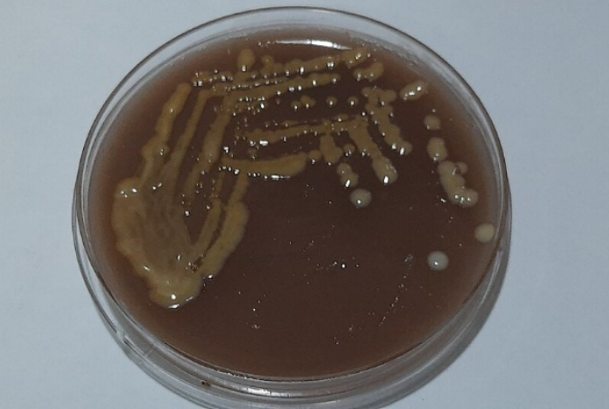
Ágar semente de Niger
Para isolamento ou subcultivo de dermatófitos recomenda-se ágar batata dextrose (PDA), encontrado no comércio sob forma desidratada, para aumentar a esporulação e facilitar a identificação do gênero e espécie do fungo.
Para fungos dimórficos, de crescimento lento (mais de 15 dias), recomenda-se o uso de meios enriquecidos como o ágar infusão de cérebro-coração (BHI) para obtenção, em menor tempo, de culturas melhor desenvolvidas. Pode ser acrescido de 5 a 10% de sangue de carneiro e de antibióticos (de preferência, cloranfenicol ou penicilina e estreptomicina).
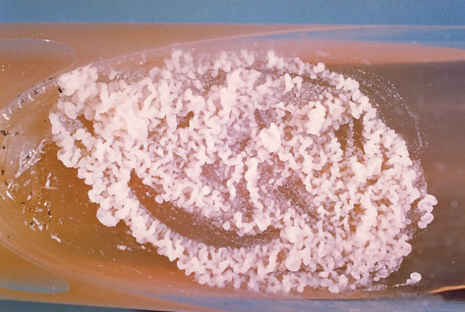
Ágar infusão de cérebro e coração (BHI)
• Procedimentos para cultura
Os materiais devidamente processados devem ser semeados na superfície dos meios de cultura com alça de níquel-cromo, alça descartável estéril, ou pipeta Pasteur, com movimentos em estrias em zigue-zague, para permitir separação de eventuais contaminantes da amostra. O material não deve ser colocado em profundidade no ágar, mas apenas aderido à superfície do meio. A temperatura de incubação recomendada para todas as amostras é de 30 °C, devido à possibilidade de o agente etiológico ser oportunista, e desse modo, crescer melhor a 30 °C do que a 37 °C no primeiro isolamento. Na impossibilidade de manter uma estufa nessa temperatura, pode-se colocar a 25 °C ou até mesmo à temperatura ambiente.
Fique atento a essas recomendações:
- Hemoculturas merecem algumas recomendações à parte para isolamento de fungos. Os frascos contendo meio bifásico e sangue ou aspirado de medula óssea devem ser submetidos à agitação manual periódica, para maior homogeneização do oxigênio na fase líquida do frasco. Exames macroscópicos diários da superfície da fase sólida são indicados para verificar aparecimento de colônias de: leveduras dos gêneros Candida, Cryptococcus e outros (24 horas a 7 dias), fungos filamentosos e Sporothrix spp. (2 a 15 dias) e fungos dimórficos, como Paracoccidioides brasiliensis, Histoplasma capsulatum (15 a 30 dias). Qualquer colônia de fungo deve ser repicada em ASD, para posterior identificação.
- Um procedimento que resulta em maior sensibilidade da cultura é a realização de repiques de 1 mL da fase líquida para tubos contendo ASD ou BHI em dias alternados: 2º, 10º e 30º dia.
- Visto que a maioria dos laboratórios brasileiros não trabalha com o meio bifásico, pode-se inocular a amostra, na mesma proporção de 10%, em frascos de hemocultura bacteriológica e fazer a leitura como anteriormente descrito. Entretanto, sistemas automatizados para hemoculturas, que acusam o crescimento de qualquer microrganismo em até 7 dias, não permitem identificar a presença de fungos de crescimento mais lento. Nesses casos, a incubação deve ser feita por um período de até 30 dias, com repiques do caldo em ASD.
A seguir você verá na planilha os procedimentos sugeridos para cultura de fungos, visando obter melhor rendimento no isolamento primário de fungos, de acordo com tipo de amostra biológica.
Procedimentos laboratoriais para isolamento de fungos, segundo amostra biológica
| Amostra biológica | Processamento | Meio de cultura |
|---|---|---|
| Secreção respiratória | - Fluidificação recomendada*. - Centrifugação. - Uso do sedimento. |
- Sabouraud 2% dextrose ágar com cloranfenicol. - Mycosel ágar. - Ágar semente de niger. |
| Líquor | - Centrifugação. - Uso do sedimento. |
- Sabouraud 2% dextrose ágar com cloranfenicol. - Ágar semente de niger. |
| Urina** | - Centrifugação. - Uso do sedimento. |
- Sabouraud 2% dextrose ágar com cloranfenicol. - Mycosel ágar. - Ágar semente de niger. |
| Fluidos corporais (pleural, ascítico, sinovial, pericárdico, gástrico, brônquico) | - Centrifugação. - Uso do sedimento. |
- Sabouraud 2% dextrose ágar com cloranfenicol. - Mycosel ágar. - Ágar semente de niger. |
| Pus e secreções de abscessos | - Nenhum. | - Sabouraud 2% dextrose ágar com cloranfenicol. - Mycosel ágar. |
| Swab embebido em salina (mucosa oral, nasal, vaginal, anal, olhos, conduto auditivo) | - Centrifugação. - Uso do sedimento. |
- Sabouraud 2% dextrose ágar com cloranfenicol. - Mycosel ágar. |
| Pele, pelos e escamas de unhas | - Nenhum. | - Sabouraud 2% dextrose ágar com cloranfenicol. - Mycosel ágar. |
| Tecidos e peças | - Fragmentação. - "Imprint" em lâmina. |
- Sabouraud 2% dextrose ágar com cloranfenicol. - Mycosel ágar. |
| Sangue e medula óssea | - Semeadura em meio de cultura. - Esfregaço ou distensão em lâmina. |
- BHI ágar. |
** Para contagem de colônias (UFC/mL), semear 0,1mL de urina em Sabouraud distribuído em placas de Petri, antes de centrifugar.
• Identificação de fungos
O isolamento de um fungo em meio de cultura não significa, necessariamente, que ele seja o agente etiológico da infecção.
O critério clínico-epidemiológico leva em consideração a relação entre o fungo isolado em meio de cultura e os sinais e sintomas identificados. No entanto, deve-se sempre valorizar o isolamento de um fungo procedente de:
- Qualquer amostra biológica que mostrou resultado positivo ao exame microscópico.
- Fluídos corporais normalmente estéreis.
- Tecidos obtidos por biópsias ou peças operatórias.
- Urina, obtida por sondagem ou cistoscopia, independentemente da contagem de colônias.
- Raspado de córnea.
- Pessoa em imunossupressão (p.ex. em uso de imunossupressores e/ou imunobiológicos, situação de pré-transplante de células-tronco ou órgãos sólidos, pessoas vivendo com HIV ou Aids).
- Pessoa em uso de antibióticos por longo tempo, internado em unidade de terapia intensiva ou submetido a ventilação mecânica, cateterismo ou outra manipulação.
- Pessoa de hemodiálise ou debilitada que apresente algum sintoma ou sinal de doença infecciosa, independentemente do tipo de amostra clínica.
Além desses casos, têm relevância o isolamento de: fungos dimórficos; fungos isolados mais de uma vez do mesmo tipo de amostra biológica, coletados em diferentes dias e procedentes do mesmo paciente; e isolados de ponta de cateter (alimentação parenteral, infusões venosas etc.).
O profissional de laboratório deve tentar identificar todas as culturas positivas relevantes e emitir o resultado mais acurado possível. Muitas vezes, o exame microscópico direto da cultura é suficiente para identificar o gênero do fungo e direcionar as medidas de controle da infecção; outras vezes somente a identificação do fungo por técnicas mais avançadas pode orientar adequadamente a conduta clínica.
• Identificação de leveduras
A macromorfologia das leveduras, em especial as do gênero Candida, não apresenta muita diversidade e, portanto, nem sempre é parâmetro suficiente para sua identificação.
Colônias de levedura obtidas de amostra biológica só devem ser identificadas quando estiverem puras, ou seja, sem contaminação bacteriana ou sem mistura de espécies. Para tanto, deve ser realizado o plaqueamento de cada colônia que seja morfologicamente distinta e deve ser confirmada sua pureza por meio de microscopia.
Para cada colônia deve ser feito um repique em ASD para sua identificação. Estão disponíveis no mercado meios de cultura comerciais para realização, ao mesmo tempo, de isolamento e identificação presuntiva de algumas espécies de Candida mais frequentes, inclusive Candida auris.
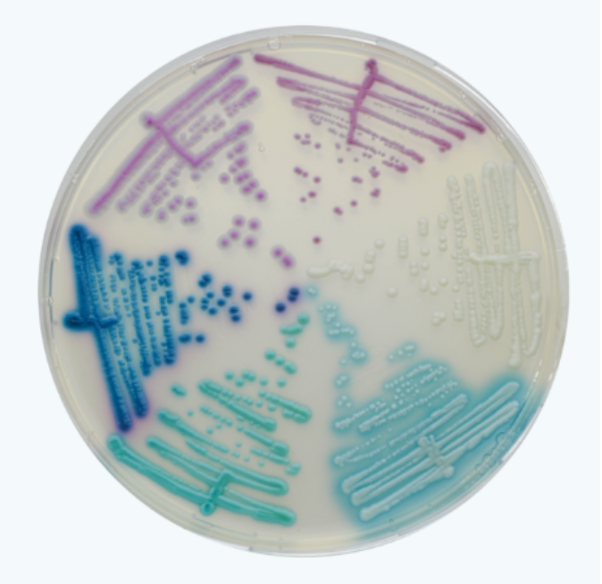
Placa de Petri contendo meio CHROMagar™Candida Plus: Candida auris (azul claro com halo azul); Candida albicans (verde azulado); Candida tropicalis (azul metálico com halo rosa); Candida krusei (rosa rugosa); Candida glabrata (malva)
As provas fisiológicas mais comuns e mais simples para identificação de Candida albicans e Candida sp. são: tubo germinativo e filamentação em cultivo em lâmina. No cultivo em lâmina, avalia-se a capacidade de produção de hifas/pseudo-hifas. Desse modo, a presença de hifas hialinas, ramificadas e sem fragmentação, é sugestiva do gênero Candida sp. e se, além disso, desenvolver clamidósporos (células de reserva arredondadas de parede espessa), em adição ao tubo germinativo positivo, é identificada como Candida albicans.
O restante dos gêneros e a classificação em espécies, porém, necessitam de provas bioquímicas para sua identificação. No entanto, do ponto de vista clínico, nem sempre é importante a identificação acurada da levedura. Por outro lado, a simples identificação de C. krusei, intrinsecamente resistente a fluconazol, é extremamente importante. A pesquisa de cápsula, característica marcante do gênero Cryptococcus, é feita com uma gota de tinta nanquim (tinta da china) e uma alçada da cultura. A cápsula, constituída de material polissacarídico, aparece como um halo claro ao redor das células de Cryptococcus e contrastam com o fundo negro da lâmina.
A prova de urease, disponível em todo laboratório de microbiologia, é muito utilizada em micologia. A reação positiva para urease, junto com a análise morfológica, permite identificação presuntiva de Cryptococcus sp e de outros basidiomicetos, como os fungos do gênero Trichosporon (e dos demais gêneros relacionados à tricosporonose). Leveduras do gênero Rhodotorula também são urease positiva, mas, como normalmente apresentam colônias com pigmento avermelhado ou salmão, são facilmente distinguidas de Cryptococcus sp.
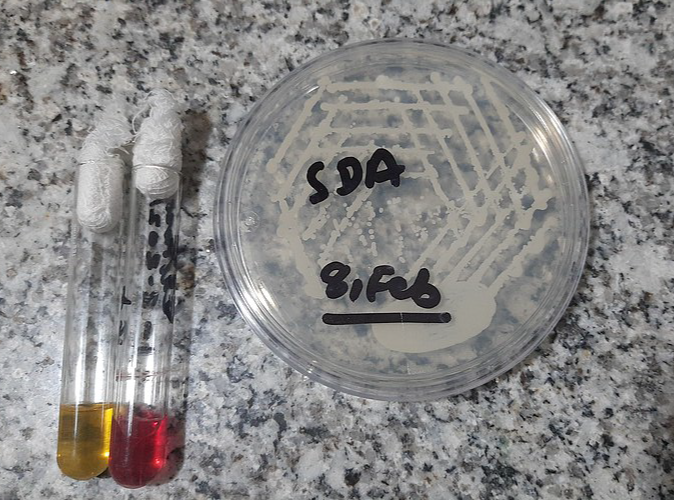
Prova de urease
Esquema simplificado para identificação de alguns gêneros de leveduras
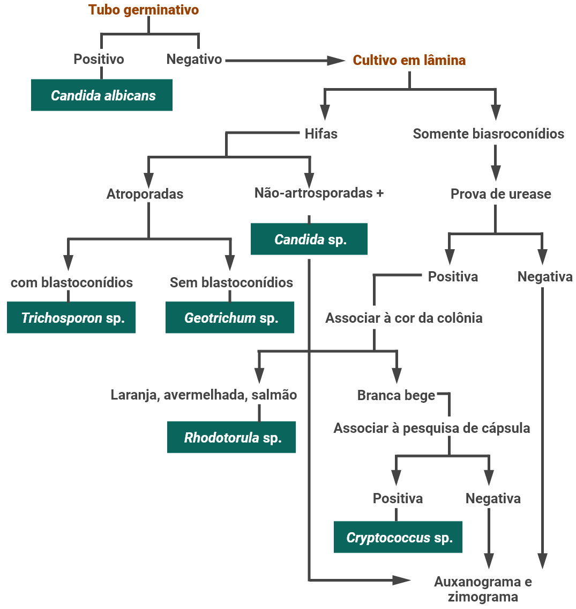
A partir de uma alçada da colônia isolada, fazer uma suspensão em tubo de ensaio contendo 0,5 mL de soro humano (pode-se usar também soro estéril de bovino, cavalo ou coelho). Incubar a 37 ºC durante um período máximo de 3 horas. Esse prazo é importante porque, após esse período, outras espécies de Candida e de outros gêneros também formam tubo germinativo.
Depositar, então, uma gota da suspensão sobre lâmina, cobrir com lamínula e examinar ao microscópio óptico. A presença de tubo germinativo, na forma de pequeno filamento que brota do blastoconídio, sem formar constrição com a célula-mãe, permite a identificação presuntiva de Candida albicans.
Prova do tubo germinativo com blastoconídios, tubo germinativo e pseudo-hifas de Candida albicans
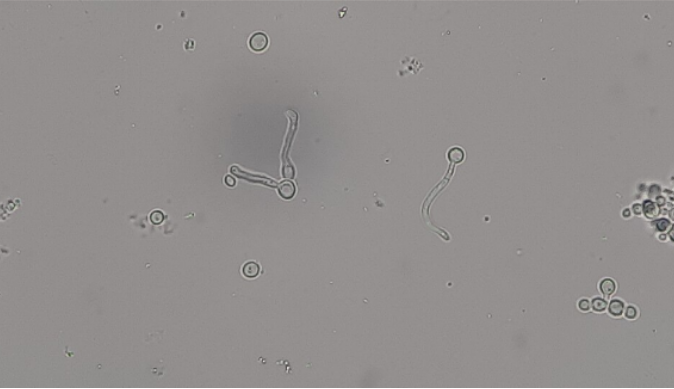
Deve-se depositar 3 mL de ágar-fubá fundido sobre uma lâmina contida sobre um suporte dentro de uma placa de Petri. O suporte para a lâmina pode ser um bastão de vidro, outra lâmina ou apenas dois palitos de madeira. Após solidificação do meio, semear a levedura com auxílio de uma agulha em "L", fazendo duas estrias paralelas. Recobrir as estrias com lamínula esterilizada. Fazer uma câmara úmida, acrescentando 2 mL de água destilada estéril na placa, ou embebendo um algodão estéril para evitar dessecação do meio durante o período de incubação da prova. Tampar a placa e examinar a preparação em microscópio óptico após 24 horas, após 48 horas e após 72 horas.
A presença de hifas hialinas, septadas e ramificadas caracteriza o gênero Candida e, se houver formação de clamidósporos, indica Candida albicans. Formação exclusiva de artrósporos permite identificação de Geotrichum (ou o gênero molecularmente relacionado Magnusiomyces), mas, quando são formados também blastoconídios, trata-se de Trichosporon, Cutaneotrichosporon ou Apiotrichum. O meio de ágar fubá ou farinha de milho pode ser adquirido comercialmente (CornMeal ágar), mas sua formulação é simples. Independentemente de o meio ser fabricado no laboratório ou comprado comercialmente, deve-se acrescentar a substância tensoativa Tween 80 para que a prova dê resultados confiáveis.
Cultivo em lâmina ou microcultivo para prova de filamentação e produção de conídios
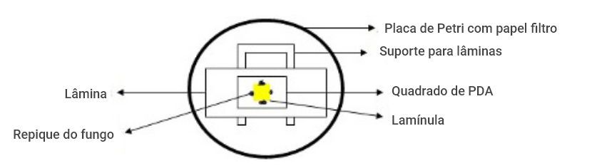
Deve-se semear uma alçada da levedura na superfície do meio de urease (ágar ureia de Christensen). Caldo ureia de Christensen também pode ser usado, a depender da disponibilidade no laboratório. Depois, incubar à temperatura de 37 ºC. A mudança da cor do meio para rosa bispo em 24 horas indica reação positiva.
Nessa prova são usados dois meios de cultura, que podem ser adquiridos comercialmente na forma desidratada (Yeast Nitrogen Base e Yeast Carbon Base) ou formulados. A levedura é semeada "pour plate", homogeneizando-se 2 mL de uma suspensão de colônias a cada meio fundido ou semeando na superfície de cada um dos meios previamente distribuídos em 2 placas de Petri. São, então, adicionadas pequenas alíquotas de diferentes carboidratos, que servem de fonte de carbono, sobre a superfície do meio isento de carbono.
Várias substâncias, incluindo álcoois, proteínas e aminoácidos, servem de fontes de nitrogênio e são colocadas sobre a superfície do meio isento de nitrogênio. Após incubação à temperatura ambiente ou a 25 °C, por período de uma semana (7 dias), a levedura irá assimilar e crescer em volta de determinadas fontes, de acordo com o metabolismo característico de sua espécie. A leitura é feita pelo halo de turvação resultante do crescimento e indica prova de assimilação positiva para a respectiva fonte. Os resultados são comparados a tabelas existentes na bibliografia recomendada.
A capacidade de fermentar carboidratos, ao lado do auxanograma, irá completar o perfil bioquímico da levedura permitindo a identificação de gênero e espécie. As características morfológicas são fundamentais para concluir a identificação, desde que as diversas espécies tenham perfis bioquímicos idênticos, mas morfologias distintas. Para o zimograma, diversas fontes de carboidratos são colocadas em tubos respectivos contendo meio básico líquido. A levedura é semeada em cada tubo e, após um período de até 15 dias a 25 °C, a fermentação é revelada por formação de bolhas de gás, observadas dentro de tubos de Durham colocados previamente durante a preparação do meio básico.
• Métodos comerciais para identificação de leveduras
Existem no mercado kits prontos, fornecidos por diferentes fabricantes, que ajudam na identificação das leveduras de forma prática. Porém, atualmente, o método mais recomendado é a espectrometria de massas (MALDI-TOF MS), uma tecnologia mais moderna, rápida e precisa para identificar fungos.
• Identificação de fungos filamentosos
Neste curso vamos mostrar para você as características que podem ser vistas a olho nu (macroscópicas) e ao microscópio (microscópicas) de alguns fungos de importância médica, especialmente aqueles que são mais comuns no Brasil.
A identificação de fungos filamentosos tem, como fundamento, a observação da morfologia da colônia e aspectos microscópicos. A análise da colônia visa observar cor, textura, superfície, pigmento difusível no meio de cultura, entre outros, e pode ser feita no tubo de ensaio contendo a cultura primária do fungo. Porém, o mais adequado é a análise a partir da cultura feita no ponto central de uma camada de SDA ou PDA distribuído em placa de Petri. A velocidade de crescimento, que pode ser rápida (menos de 7 dias), intermediária (8 a 14 dias) ou lenta (mais de 15 dias), é fundamental para a identificação presuntiva do fungo.
Em geral, a observação das estruturas microscópicas, tais como hifa hialina ou demácea, septada ou cenocítica, forma, disposição e formação dos esporos, são suficientes para a identificação dos gêneros, mas nem sempre para a caracterização das espécies de fungos filamentosos, sendo necessária, nesses casos, a identificação por biologia molecular e/ou espectrometria de massas.
A morfologia microscópica é mais bem visualizada com a técnica de cultura em lâmina/microcultivo, que preserva a disposição original dos esporos sobre as hifas e mantém íntegras certas estruturas formadoras de esporos, como os esporângios, que são órgãos de reprodução de zigomicetos.
• Técnica de cultivo em lâmina ou microcultivo para fungos filamentosos
Coloque, sobre uma lâmina esterilizada dentro de uma placa de Petri estéril, um cubo de ágar ASD ou PDA. Apoie a lâmina em um suporte, que pode ser outra lâmina, um pequeno bastão de vidro recurvado ou até mesmo dois palitos de fósforo. Semeie o fungo usando um repique recente nos quatro lados do cubo de ágar. Em seguida, cubra com uma lamínula esterilizada.
Para manter o ambiente úmido prepare uma "câmara úmida", adicionando 1 a 2 mL de água destilada estéril no fundo da placa ou um chumaço de algodão estéril embebido em água, evitando que o meio de cultura seque durante o crescimento do fungo. Tampe a placa e incube em temperatura ambiente ou a 25 °C por 7 a 10 dias, até observar o desenvolvimento de hifas com ou sem pigmentação. Após esse período, inative a esporulação adicionando 1 mL de formol ao algodão, vedando a placa com fita adesiva por 24 a 48 horas. O vapor de formol, além de inativar o fungo, fixa as estruturas microscópicas.
Técnica de cultivo em lâmina ou microcultivo para análise microscópica de fungos filamentosos.
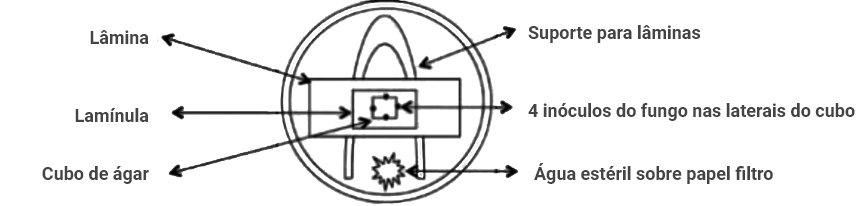
Depois disso, retire cuidadosamente a lamínula com uma pinça, pois nela estarão aderidas as hifas e esporos do fungo. Pingue uma gota do corante lactofenol-azul de algodão (Cotton Blue) sobre a lâmina e coloque a lamínula por cima.
Descarte o cubo de ágar e, em seu lugar, pingue outra gota do mesmo corante na lâmina, cobrindo-a com uma nova lamínula. Assim será possível visualizar também os esporos e hifas que ficaram aderidos à lâmina. Observe no microscópio óptico, com a objetiva de 40X, o tipo e a cor da hifa, além da forma, disposição e formação dos conídios.
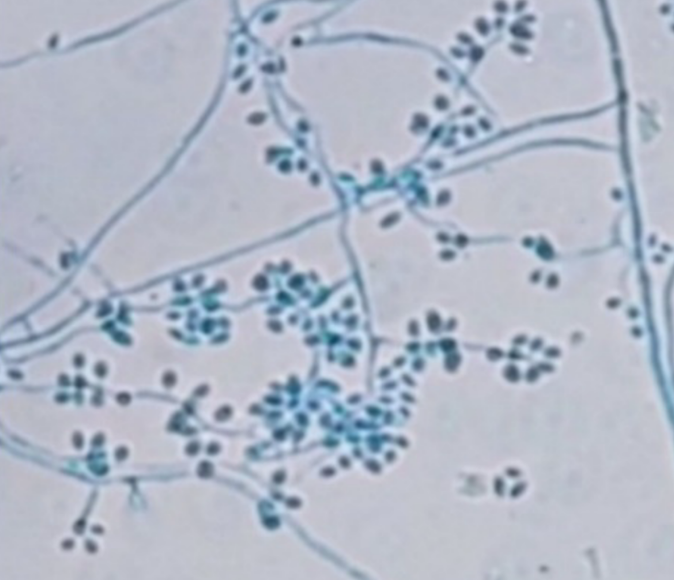
Exemplo de fungo filamentoso apresentando hifas hialinas septadas e conídios
• Identificação de fungos dimórficos
Esses são tipos de fungos filamentosos que podem, sob determinadas condições (como parasitismo), assumir forma de levedura ou esférula e dividir-se por brotamento, conferindo às colônias um aspecto cremoso. Essa fase leveduriforme ocorre sob temperaturas acima de 30 °C, de preferência a 37 °C. São fungos de crescimento lento (>15 dias) no primo-isolamento (Histoplasma capsulatum e Paracoccidioides spp.) ou moderado (8 a 14 dias), como Sporothrix spp. e Coccidioides spp. A identificação é feita pela comprovação do dimorfismo e pelo aspecto microscópico característico de cada fase.
Microscopia dos fungos dimórficos: fase filamentosa (infectante) à 25°C e fase leveduriforme (parasitismo) a 37°C
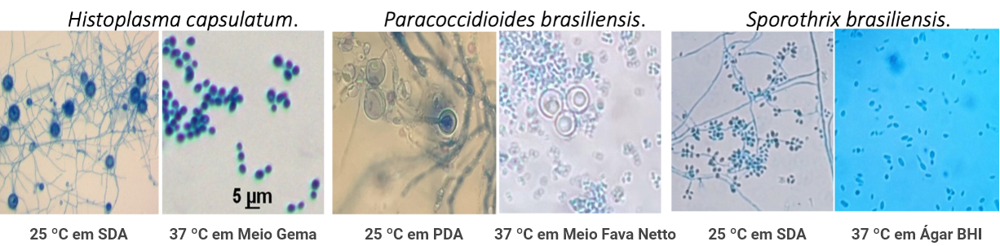
Imagens cedidas por Marcos de Abreu Almeida, Beatriz da Silva Motta e Maria Helena G. Figueiredo-Carvalho
Características microscópicas e macroscópicas dos fungos dimórficos em suas fases filamentosa (25 °C) e leveduriforme (37 °C)
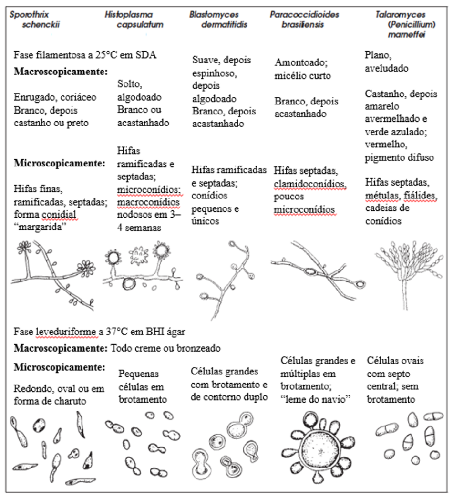
No quadro a seguir é possível ver as características dos agentes etiológicos das principais micoses observadas no Brasil.
Principais micoses observadas no Brasil e suas características em cultura
| Agentes etiológicos |
Amostra | Macroscopia do fungo em cultivo | Microscopia do fungo em cultivo | |
|---|---|---|---|---|
| Micoses cutâneas dermato-fitoses (tineas) |
Agentes etiológicos
Microsporum spp. Nannizzia spp. Trichophyton spp. Epidermophyton floccosum |
Escamas de pele, unha e cabelos. |
M. canis: colônia branca, penugenta com pigmento amarelo-alaranjado
no verso. N. gypsea: colônia pulverulenta de cor camurça, com pigmento pardo no verso. T. rubrum: colônia branca, granular ou cotonosa, com pigmento vermelho no verso. T. mentagrophytes: colônia branca, granular ou cotonosa, com pigmento que vai do amarelo ao marrom no verso. T. tonsurans: colônia acastanhada com pigmento vermelho-ferruginoso no verso. E. floccosum: colônia membranosa de cor verde-limão. |
M. canis: macroconídios fusiformes, multisseptados de paredes rugosas
e mais espessas que a dos septos, poucos microconídios. N. gypsea: numerosos macroconídios fusiformes, multisseptados, de paredes rugosas e finas, poucos microconídios. T. rubrum: microconídios em gota de lágrima dispostos ao longo da hifa e macroconídios, que quando existem, são comuns do gênero. T. mentagrophytes: Macroconídios do gênero, microconídios redondos numerosos. T. tonsurans: microconídios numerosos e polimórficos, usualmente clavados ou alongados. E. floccosum: macroconídios em grupos de três ou mais na extremidade de conidióforos, microconídios inexistentes. |
| Micoses sub-cutâneas | ||||
| Sporothrix spp. | Aspirado de lesões ou tecido obtido por biópsia. | Fungo dimórfico de crescimento lento. A temperatura <30°C a forma filamentosa se apresenta como colônia membranosa e acastanhada. O agente cresce em sua fase leveduriforme a 35 °C, colônia com aspecto cremoso, liso e de cor creme. | Filamento: hifas septadas, ramificadas e conidióforo com conídios piriformes dispostos em arranjo semelhante à flor "margarida". Levedura: células ovais ou em formato de charuto. | |
|
Fonsecaea spp. Cladophialophora Phialophora spp. Rhinocladiella spp. Exophiala spp. |
Raspado de lesão ou tecido obtido por biópsia. | Crescimento de colônias aveludadas de coloração verde oliva a negro. Reverso negro. | Hifas demáceas septadas e ramificadas, a depender do tipo de conidiogênese para identificação em nível de gênero. | |
| Micoses sistêmicas | Paracoccidioides brasiliensis | Raspado de lesão a mucosa, secreção do trato respiratório, aspirado de linfonodos, tecido obtido por biópsia. | Fungo dimórfico de crescimento lento. A temperatura <30°C a forma filamentosa de coloração branca, cotonosa, com sulcos centrais. O agente cresce em sua fase leveduriforme a 35 °C de cor creme, preguadas e enrugadas. | Filamento: trama de hifas hialinas sem conídios. Levedura: pequenas leveduras em brotamento. |
| Histoplasma capsulatum | Secreção do trato respiratório, sangue, punção de medula óssea, tecido obtido por biópsia de mucosas e outros. | Fungo dimórfico de crescimento lento. A temperatura <30°C forma filamentosa de coloração branca, aspecto cotonoso e sulcado. O agente cresce em sua fase leveduriforme a 35 °C com colônias glabras, lisas, branco amarelada. | Filamento: esporos grandes macroconídios arredondados e com inúmeras espículas ou granulações na parede celular (hipnósporos). Levedura: pequenas leveduras ovais e unibrotantes. | |
|
Fungos da classe dos zigomicetos: Mucor, Rhizopus, Absidia, entre outros |
Secreção de sinus nasal ou tecidos obtidos por biópsia de seios paranasais ou lesões subcutâneas. | Os agentes de zigomicose têm crescimento rápido e são identificados pelo aspecto de esporangióforos, rizoides, apresentando termotolerância. | Hifas cenocíticas e esporos contidos dentro de estruturas fechadas chamadas esporângios. | |
| Micoses oportunistas | Candida albicans e outras espécies que estão frequentemente envolvidas em infecções de pacientes debilitados. | Fragmentos de pele e unhas; raspados de mucosa oral, vaginal, anal; secreção do trato respiratório; sangue; líquor; urina. | Crescimento rápido com formação de colônias com coloração branca a bege. As espécies de C. albicans, C. tropicalis e C. krusei podem ser identificadas no meio cromogênico Chromagar, pois suas colônias se apresentam na cor verde, azul e rosa rugosa, respectivamente. Técnicas automatizadas podem ser utilizadas para identificação das espécies Vitek 2 e MALDI-TOF MS. | Para identificação de Candida albicans podem ser realizadas provas de indução de tubo germinativo e de clamidósporo terminal (ambos positivos para essa espécie). |
| Cryptococcus neoformans | Líquor, secreção do trato respiratório ou de lesão de pele, aspirado de formação tumoral subcutânea e tecidos obtidos por biópsia. |
Crescimento rápido em meio Sabouraud, sob forma de colônias mucoídes de coloração creme a parda.
Importante: esse agente não cresce em meio Mycosel ágar, pois é inibido pela ciclo-heximida. C. neoformans e C. gattii são capazes de produzir a enzima extracelular fenol oxidase, que faz com que a levedura se torne melanizada quando colocada em cultivo com compostos fenólicos (meio ágar semente de Niger). |
O aspecto microscópico do conidióforo permite distinção entre as diferentes espécies. | |
| Aspergillus spp. | Secreção do trato respiratório, material de biópsia e lavado brônquico. |
A. fumigatus (espécie mais comum): crescimento rápido, até 7 dias,
com desenvolvimento de filamentos brancos que se tornam verde a verde acinzentado, com formação de
esporos. Colônia inicialmente branca e coberta por um micélio aéreo plumoso, que, ao madurar, produz pigmento de cor lavanda a vermelho-púrpura (anverso e reverso). |
O aspecto microscópico do conidióforo permite distinção entre as diferentes espécies. | |
| Fusarium spp. | Depende da localização da lesão — biópsia ou raspado de pele, córnea, fragmento de unha ou sangue. | Hifas hialinas, septadas, macroconídios de 2 a 3µm de diâmetro, e macroconídios com forma de "banana" ou de "foice", bi ou trisseptados. | — |
Por apresentarem elementos muito característicos as figuras a seguir ilustram a microscopia observada dos agentes de mucormicose e das dermatofitoses em cultivo.
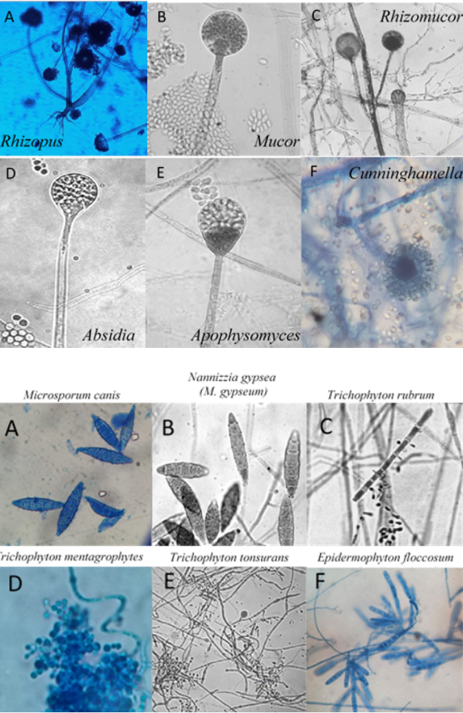
Agentes de mucormicose e dermatofitose